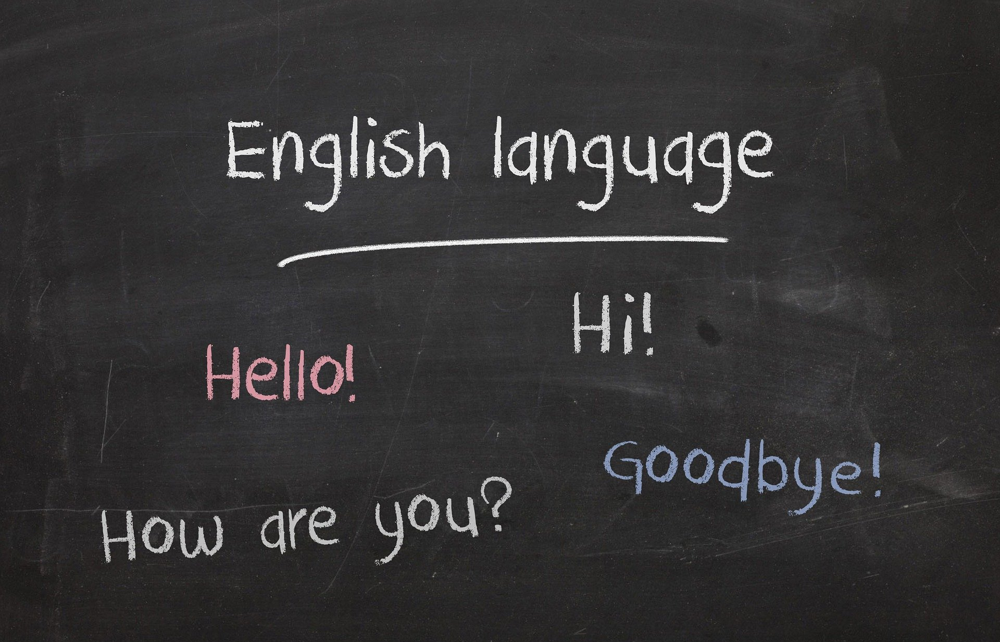

About Us
하이블어학원의 영어기능(듣기, 말하기, 읽기, 쓰기)의 통합교육이란?
영어의 4기능에는 듣기, 말하기, 읽기, 쓰기가 있습니다.
듣기와 읽기는 이해기능, 말하기와 쓰기는 표현기능을 담당하고 있지요.
하이블어학원에서는 영어기능에서 한 가지 기능만을 분리하여 따로 따로 지도하는 것보다
통합적으로 지도하는 것이 전체적인 영어 능력을 길러주는데 효과적이기 때문에
4가지 기능들을 통합해서 교육하고 있습니다.
영어의 4기능을 통합하여 학습해야 하는 이유
1. 언어의 발화와 이해는 동전의 양면과 같아서 서로 분리하기 어렵습니다.
2. 말과 글은 상호의존적, 상호보완적이기 때문에
이들 간의 관계를 무시한다면 언어의 풍부함을 잃게 됩니다.
3. 글을 아는 사람에게 있어서 말과 글의 상호관계는
매우 재미있는 언어, 문화와 사회의 반영이기 때문에
언어의 4기능 모두를 사용할 수 있어야 합니다.
4. 한 가지 언어기능은 다른 언어기능을 강화시키는 기능을 합니다.
하이블어학원의 통합영어교육프로그램은 어린 학생들의 관심과 흥미를 끌어낼 수 있도록
듣기, 말하기, 읽기, 쓰기가 모두 골고루 통합되는 교육과정이 도출되어 포괄적인 영어실력향상을 가져옵니다.
영어, 어렵지 않습니다. 누구나 즐겁게 영어를 잘 할 수 있습니다.